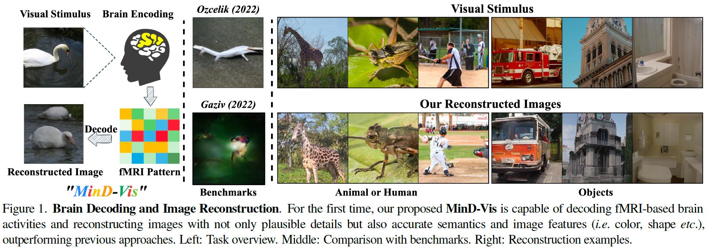
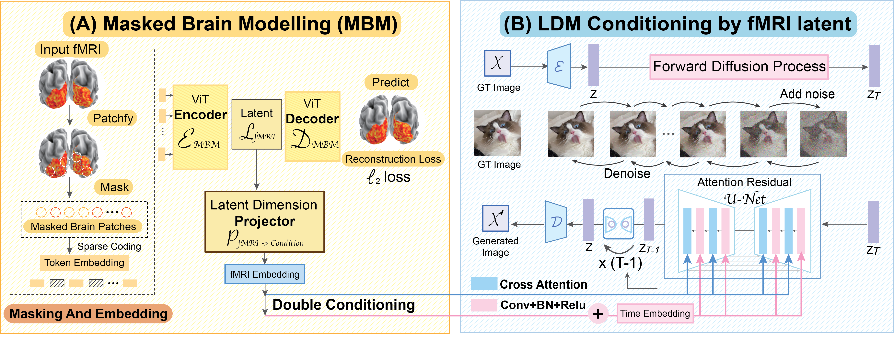

Seeing Beyond the Brain: Conditional Diffusion Model with Sparse Masked Modeling for Vision Decoding
- Zijiao Chen1*
- Jiaxin Qing2*
- Tiange Xiang3
- Wan Lin Yue1
- Juan (Helen) Zhou1
- 1National University of Singapore, Center for Sleep and Cognition
- 2The Chinese University of Hong Kong, Department of Information Engineering
- 3Standford University, Vision and Learning Lab
- *Equal Contribution


Overview

Motivation
Decoding visual stimuli from brain recordings aims to deepen our understanding of the human visual system and build a solid foundation for bridging human vision and computer vision through the Brain-Computer Interface.
However, due to the scarcity of data annotations and the complexity of underlying brain information, it is challenging to decode images with faithful details and meaningful semantics.
Contribution
In this work, we present MinD-Vis: Sparse Masked Brain Modeling with Double-Conditioned Diffusion Model for Vision Decoding.
Specifically, by boosting the information capacity of representations learned in a large-scale resting-state fMRI dataset, we show that our MinD-Vis framework reconstructed highly plausible images with semantically matching details from brain recordings with very few training pairs.
We benchmarked our model and our method outperformed state-of-the-arts in both semantic mapping (100-way semantic classification) and generation quality (FID) by 66% and 41%, respectively.
Exhaustive ablation studies are conducted to analyze our framework.
Highlights
- A human visual decoding system that only reply on limited annotations.
- State-of-the-art 100-way top-1 classification accuracy on GOD dataset: 23.9%, outperforming the previous best by 66%.
- State-of-the-art generation quality (FID) on GOD dataset: 1.67, outperforming the previous best by 41%.
- For the first time, we show that non-invasive brain recordings can be used to decode images with similar performance as invasive measures.
MinD-Vis
Stage A (left): Self-supervised pre-training on large-scale fMRI dataset using Sparse-Coding based Masked Brain Modeling (SC-MBM); Stage B (right): Double-Conditioned Latent Diffusion Model (DC-LDM) for image generation conditioned on brain recordings.
Results compared with SOTA

Generation Consistency Replication Dataset

BibTeX
If you find our data or project useful in your research, please cite:
@InProceedings{Xiang_2021_ICCV,
author = {Xiang, Tiange and Zhang, Chaoyi and Song, Yang and Yu, Jianhui and Cai, Weidong},
title = {Walk in the Cloud: Learning Curves for Point Clouds Shape Analysis},
booktitle = {Proceedings of the IEEE/CVF International Conference on Computer Vision (ICCV)},
month = {October},
year = {2021},
pages = {915-924}
}